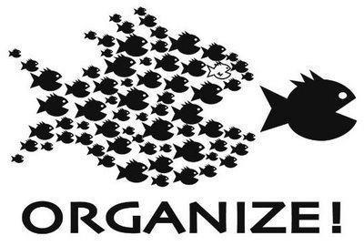

கட்டற்ற மென்பொருள் அறக்கட்டளை (தமிழ் நாடு)
“ கட்டற்ற மென்பொருள் இயக்கம்”
கட்டற்ற மென்பொருள் என்றால் என்ன?
கட்டற்ற மென்பொருள் அமையத்தின் வரைவிலக்கணப்படி, கட்டற்ற மென்பொருள் என்பது, எந்தவிதமான கட்டுப்பாடுகளும் இல்லாமல் பயன்படுத்த, நகலெடுக்க, கற்க, மாற்றம் செய்ய, மறு விநியோகம் செய்யப்படக்கூடியமென்பொருளாகும்.
தளையறு நிலை 0(பயன்பாடு)
எத்தகைய நோக்கத்திற்காகவும் மென்பொருளைத் தொழிற்படுத்துவதற்கு /பயன்பத்துவதற்கான தளையறு நிலை.(The freedom to run the program, for any purpose)
தளையறு நிலை 1(திருத்தல்)
(அம்)மென்பொருள் எவ்வாறு தொழிற்படுகிறது என்பதை கற்றுக்கொள்ளவும், உங்கள் தேவைகளுக்கேற்ப அதனை உள்வாங்கிக்கொள்ளவும் தடுக்காத தளையறு நிலை. ஆணை மூலத்தைப் பார்வையிட அனுமதித்தல் இதற்கான முன்னிபந்தனை (The freedom to study how the program works, and change it to make it do what you wish)
தளையறு நிலை 2(பகிர்வு)
நகல்களை மீள்வினியோகம் செய்வதற்கான தளையறு நிலை. இதன்மூலம் நீங்கள் உங்கள் அயலவர்களுக்கு உதவமுடியும்.(The freedom to distribute copies of your copies to others)
தளையறு நிலை 3(திருத்தியதை பகிர்தல்)
மென்பொருளை மேம்படுத்துவதற்கும், மேம்பாடுகளைப் பொதுமக்களுக்கு வெளியிடுவதற்குமான தளையறு நிலை. இதன்மூலம் மொத்த சமுதாயமும் பயன்பெறுகிறது. இவ்வாறு விநியோகிக்கப்படும் மென்பொருள்களின் ஆணைமூலம் பார்வைக்கு வழங்கப்பட வேணும் என்பது இதற்கான முன்நிபந்தனை(The freedom to improve the program, and release your improvements to others, so that whole community benefits.)
கட்டற்ற மென்பொருள் இயக்கம்
ரிச்சர்ட் மாத்யூ ஸ்டால்மன்(Richard Mathew Stallman) என்பவர் கட்டற்ற மென்பொருள் இயக்கம், க்னூ திட்டம், கட்டற்ற மென்பொருள் இயக்கம் , நிரலாக்க தளையறுப்பு லீக் போன்றவற்றின் தோற்றுவிப்பாளராவார்.

லினக்சு கருனி
லினசு
லினசு பெனெடிக் வோர்வால்சு பின்லாந்தின் கேல்சிங்கி நகரில் பிறந்தார்.இவர் ஒரு பின்லாந்து மென்பொருள் விருத்தியாளர்.இவர் லினக்சு கருவின் விருத்திக்காவும், ஜிட் திருத்தக் கட்டுப்பாட்டு மென்பொருளுக்காகவும் அறியப்படுகிறார். இவர் மிகச்சிறந்த கட்டற்ற திறந்த மென்பொருள் ஆக்கர்களில் ஒருவர் ஆவார்.
குனூ/லினக்ஸ்
குனூ/லினக்ஸ்
குனூ/லினக்ஸ் (GNU/Linux) என்பது கணினிகளில் உள்ள ஓர் இயக்குதளமாகும்.இவ்வியக்குதளம் பொதுவாக லினக்ஸ் என்ற பெயரால் அறியப்படுகிறது. ஆனாலும், இதன் மிகச்சரியான நிறுவன ஏற்புப் (உத்தியோகபூர்வமான) பெயர் குனூ/லினக்ஸ் என்பதேயாகும்.லினக்ஸ் பரவலாக மஞ்சள்-கருப்பு-வெள்ளை பென்குயின் பறவைச் சின்னத்தால் அடையாளப்படுத்தப்படுகிறது.
விக்கிப்பீடியா(கட்டற்ற அறிவு) + கட்டற்ற மென்பொருள்
கட்டற்ற அறிவு, கட்டற்ற மென்பொருள் போன்றே மிகவும் முக்கியமானதாகும். இரண்டும் சேர்ந்தே கட்டற்ற உலகை படைக்க முடியும்.
பயனர்
- Yahoo
- Android
- Microsoft
- IBM
தவறான கருத்து

குனூ/லினக்ஸ் பயனர் குழு
சேர்ந்துசெய்தல் & பகிர்தல்
இந்தியாவில் கட்டற்ற மென்பொருள் இயக்கங்கள்
- Free Software Movement of India (fsmi.in)
- Swecha (swecha.org)
- Free Software Movement of Karnataka (fsmk.org)
- Democratic Alliance for Knowledge Freedom (dakf.in)
- கட்டற்ற மென்பொருள் அறக்கட்டளை (தமிழ் நாடு)
காட்சியளிப்பை பற்றி
License : Copyleft
மேற்கோ ள்கள்
- Wikipedia(www.wikipedia.org)
- Free Software Foundation (www.fsf.org)
- GNU (www.gnu.org)
கேள்விகள் எங்கே கேட்பது?
- discuss.fsftn.org
- ask@fsftn.org
- aravind@fsftn.org